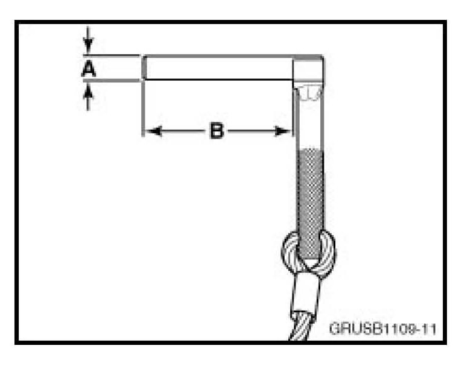
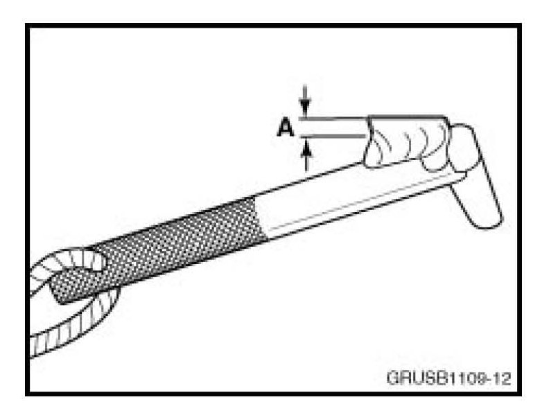

Engine - TDC Alignment Tool Modification
SI B 11 02 09Engine
February 2009
Technical Service
SUBJECT
Information only
MODEL
E60 and E61 (5 Series) with N52K and N54 engine
E70 (X5) with N52K engine
E71 (X6) with N54 engine
E82 and E88 (1 Series) with N51, N52K and N54 engine
E83 (X3) with N52K engine
E85 (Z4) with N52K engine
E90, E91, E92 and E93 (3 Series) with N51, N52K and N54 engine
SITUATION
The TDC Alignment Special Tool 11 0 300 is difficult to install into the engine block bore, or interferes with the low pressure fuel line support bracket, as described in the TIS repair instructions when checking or adjusting the engine mechanical timing.

Vehicles equipped with the N52 or N2K engine require a modification to the dowel pin portion, as shown in the illustration. Reduce the diameter (A) by 0.10 mm for the entire length (B) of the dowel pin. Removing the black finish on the dowel pin with an emery cloth or the equivalent will be sufficient. Do not drill or ream the engine crankcase hole.

Vehicles equipped with the N54 engine will require approximately 2-3 mm of material (A) to be removed from the area indicated in the illustration.

Disclaimer